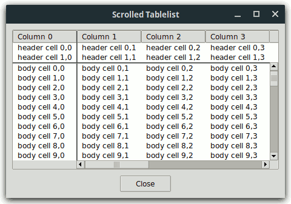
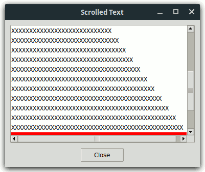
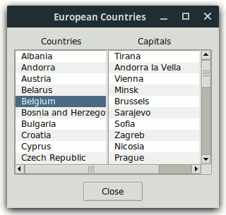
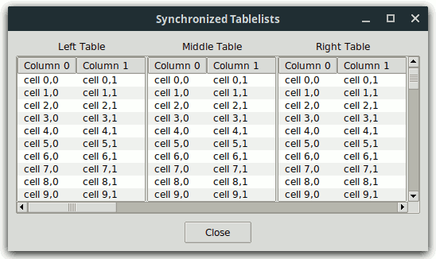
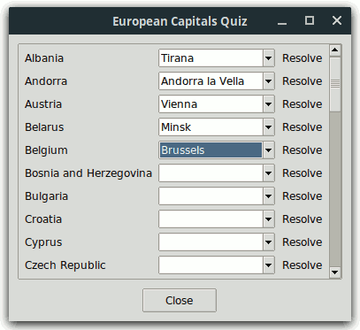
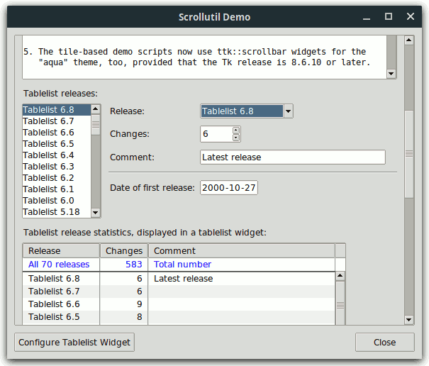
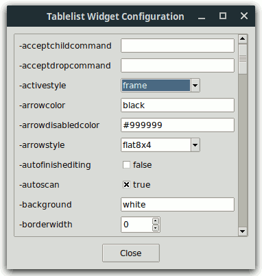

styleUtil.tclScrollutil is a library package for Tcl/Tk versions 8.0 or higher, written in pure Tcl/Tk code. It contains:
scrollutil::addMouseWheelSupport,
which creates mouse wheel event bindings for a given binding tag.
This command requires Tcl/Tk 8.4 or later;The scrollutil::scrollarea mega-widget greatly simplifies the
creation of arbitrary scrolled widgets. It consists of a scrollable
widget and two scrollbars connected with that widget. The display mode
of each scrollbar can be static, dynamic, or
none. This scrolled window implementation also supports
the widgets that are scrollable in one direction only (e.g., entry and
ttk::entry) and respects the header component and title columns of tablelist widgets (this is freely
configurable).
The scrollutil::scrollarea widget is similar to BWidget ScrolledWindow and its snit-based equivalent widget::scrolledwindow, contributed by Jeffrey Hobbs and contained in tklib. The snit-based scrodget package by Aldo Buratti and its TclOO-based equivalent scrolledwidget contributed by Johann Oberdorfer are further scrolled window implementations. However, full tablelist support is only provided by the scrollarea widget, which is free from external dependencies like BWidget, snit, or (for Tcl 8.5) TclOO. It is also free from the shimmering problem in connection with text widgets, which the above-mentioned scrolled window implementations either share with the autoscroll package (contained in tklib) or circumvent in a suboptimal way.
The scrollutil::scrollsync mega-widget is designed for scrolling
several widgets simultaneously. Whenever the horizontal/vertical
position of the view in the window of one of its widgets changes, the view in
the windows of all the other widgets is automatically adjusted accordingly,
thus making sure that the view's position in these windows is kept in
sync. This mega-widget is horizontally and vertically scrollable, hence
it can be embedded into a scrollutil::scrollarea widget via the latter's
setwidget subcommand.
The scrollutil::scrollableframe mega-widget is a scrollable widget container. It contains a content frame, whose dimensions are typically larger than those of the widget itself. Arbitrary regions of this frame can be brought into view by scrolling, and the widget also provides a command for making individual widgets contained in the content frame visible in the scrollableframe window.
The scrollutil::scrollableframe widget is similar to BWidget
ScrollableFrame and iwidgets::scrolledframe. However, unlike these
widgets, which use a canvas for scrolling the content frame, it adjusts the
view with the aid of the place geometry manager, just
like the scrolledframe::scrolledframe command of the
Scrolledframe package by Maurice Bredelet (ulis) and its optimized and
enhanced version contributed by Keith Nash. For details on these
commands see the wiki page
https://wiki.tcl-lang.org/page/A+scrolled+frame
Scrollutil's canvas-free approach is more lightweight and integrates better in applications that use tile widgets.
From the point of view of the commands related to mouse wheel event
handling provided by the Scrollutil package, the scrollability of a
widget or widget container window means that the associated Tcl command
supports the xview scroll number units
and yview scroll number units
subcommands. The reason for requiring at least Tk version 8.6b2 on
Windows for the commands related to scrollable widget containers is that in
earlier Tk versions on this platform the mouse wheel events were sent to the
widget having the focus rather than to the one under the pointer.
To make use of the user-friendly mouse wheel event handling via the Scrollutil package, follow the steps below:
"all" or for the toplevel widgets (including ".")
having scrollable widget containers, by invoking the scrollutil::createWheelEventBindings
command. In addition, register your scrollable widget containers for
scrolling via these bindings with the aid of the scrollutil::enableScrollingByWheel
command. The above-mentioned bindings handle the mouse wheel events
by scrolling the (innermost) registered scrollable widget container that is
an ascendant of the widget under the pointer and is contained in the
latter's toplevel.scrollutil::adaptWheelEventHandling
command for those widgets contained in registered scrollable widget
containers that have mouse wheel event (class) bindings. This step
eliminates the annoying and often dangerous double-handling effect, by
modifying the mouse wheel event handling as follows: If the focus is
on the widget under the pointer then the mouse wheel events will be handled
by the (class bindings of the) widget only, otherwise by the bindings
created with the scrollutil::createWheelEventBindings
command. Without this step the mouse wheel events would scroll both
the listbox, text, ttk::treeview, or tablelist widget under the pointer
and the widget container to whose descendants the latter belongs, or
they would select the next/previous value in the ttk::combobox or
ttk::spinbox under the pointer in addition to scrolling the widget
container."Date",
"Time", "DateTime", "IPAddr", or
"IPv6Addr" and the focus is on any of its siblings, then the
mouse wheel events sent to this entry should be handled by the entry widget
itself rather than scrolling the widget container that is an ascendant of
the mentry. The scrollutil::setFocusCheckWindow
command covers exactly cases like this.The mouse wheel event handling with the aid of the Scrollutil package was
also tested to work with the scrolledframe::scrolledframe
command of the Scrolledframe package by Maurice Bredelet (ulis) and its
optimized and enhanced version contributed by Keith Nash, as well as with the
sframe command implemented by Paul Walton. For details on
these commands (which provide further implementations of scrollable widget
containers) see the above-mentioned wiki page.
Scrollutil is available for free download from the Web page
https://www.nemethi.de
The distribution file is scrollutil1.5.tar.gz for UNIX and
scrollutil1_5.zip for Windows. These files contain the
same information, except for the additional carriage return character
preceding the linefeed at the end of each line in the text files for
Windows.
Scrollutil is also included in tklib, which has the address
https://core.tcl.tk/tklib
Install the package as a subdirectory of one of the directories given by
the auto_path variable. For example, you can install it as
a directory at the same level as the Tcl and Tk script libraries. The
locations of these library directories are given by the
tcl_library and tk_library variables,
respectively.
To install Scrollutil on UNIX, cd to the desired
directory and unpack the distribution file
scrollutil1.5.tar.gz:
gunzip -c scrollutil1.5.tar.gz | tar -xf -
On most UNIX systems this can be replaced with
tar -zxf scrollutil1.5.tar.gz
Both commands will create a directory named scrollutil1.5,
with the subdirectories demos, doc, and
scripts.
On Windows, use WinZip or some other program capable of unpacking
the distribution file scrollutil1_5.zip into the directory
scrollutil1.5, with the subdirectories demos,
doc, and scripts.
Notice that in tklib the Scrollutil demos directory is
replaced with the subdirectory scrollutil of the
examples directory. Please take this into account when
reading the examples below.
The Scrollutil distribution provides two packages, called
Scrollutil and Scrollutil_tile. The main difference
between the two is that Scrollutil_tile enables the tile-based,
theme-specific appearance of scrollarea, scrollsync, and scrollableframe
widgets; this package requires Tcl/Tk 8.4 or higher and tile 0.6 or
higher. It is not possible to use both packages in one and the same
application, because both are implemented in the same scrollutil
namespace and provide identical commands.
To be able to access the commands and variables defined in the package Scrollutil, your scripts must contain one of the lines
package require scrollutil ?version? package require Scrollutil ?version?
You can use either one of the two statements above because the file
scrollutil.tcl contains both lines
package provide scrollutil ... package provide Scrollutil ...
Likewise, to be able to access the commands and variables defined in the package Scrollutil_tile, your scripts must contain one of the lines
package require scrollutil_tile ?version? package require Scrollutil_tile ?version?
Again, you can use either one of the two statements above because the file
scrollutil_tile.tcl contains both lines
package provide scrollutil_tile ... package provide Scrollutil_tile ...
You are free to remove one of these two lines from
scrollutil.tcl and scrollutil_tile.tcl,
respectively, if you want to prevent the corresponding packages from making
themselves known under two different names each. Of course, by doing so
you restrict the argument of package require to a
single name.
Since the packages Scrollutil and Scrollutil_tile are implemented in the
scrollutil namespace, you must either invoke the
namespace import scrollutil::pattern ?scrollutil::pattern ...?
command to import the procedures you need, or use qualified names
like scrollutil::scrollarea. In the examples below we have chosen the latter approach.
To access Scrollutil variables, you must use qualified
names. There are only three Scrollutil variables that are designed to
be accessed outside the namespace scrollutil:
scrollutil::version holds the current version
number of the Scrollutil package.scrollutil::library holds the location of the
Scrollutil installation directory.scrollutil::usingTile has the value
0 in the package Scrollutil and the value 1 in
Scrollutil_tile.The Scrollutil_tile package checks whether the required Tk and tile versions are present, by executing the commands
package require Tk 8.4
if {$::tk_version < 8.5 || [regexp {^8\.5a[1-5]$} $::tk_patchLevel]} {
package require tile 0.6
}
The second command above reflects the fact that, beginning with Tk 8.5a6, tile is integrated into the Tk core and therefore it should only be loaded explicitly when using an earlier Tk version.
styleUtil.tclAll the examples in the demos directory use tile (ttk)
widgets and contain the line
source styleUtil.tcl
The script styleUtil.tcl patches a few ttk widget styles and
defines the style Small.Toolbutton. In addition, on X11 it
sets the theme to a slightly patched variant of the clam
theme (having smaller ttk::button widgets as well as ttk::treeview and
tablelist headers).
The patch for the style TCombobox makes sure that the
(readonly) ttk::combobox widgets of the themes alt,
clam, and default will show whether they have the
focus. This basic requirement, which makes the keyboard navigation more
user-friendly, is already fulfilled by the themes vista,
xpnative, and aqua.
The ttk::button widgets of the style Small.Toolbutton created
by the procedure createToolbutton, implemented in this helper
script, will appear raised when they have the focus. Again, this makes
the keyboard navigation more user-friendly.
This example shows how you can greatly simplify the creation of a scrolled tablelist by using a scrollarea widget.
The file ScrolledTablelist1.tcl in the demos
directory creates a horizontally and vertically scrolled tablelist widget
having two header rows and one title column, and manages the two scrollbars
in such a way that the vertical scrollbar appears below the tablelist's
header and the horizontal one starts to the right of the widget's title
column area:

The script achieves these requirements using traditional scrollbar management, which is shown below in red color:
package require Tk 8.5 package require tablelist_tile 6.3 source styleUtil.tcl wm title . "Scrolled Tablelist" # # Create the tablelist and the scrollbars as children # of a frame having -borderwidth 1 and -relief sunken # set f [ttk::frame .f] set frm [ttk::frame $f.frm -borderwidth 1 -relief sunken] set tbl $frm.tbl set vsb $frm.vsb set hsb $frm.hsb tablelist::tablelist $tbl ... -borderwidth 0 \ -xscrollcommand [list $hsb set] -yscrollcommand [list $vsb set] . . . ttk::scrollbar $vsb -orient vertical -command [list $tbl yview] ttk::scrollbar $hsb -orient horizontal -command [list $tbl xview] . . . # # Manage the widgets within the frame # grid $tbl -row 0 -rowspan 2 -column 0 -columnspan 2 -sticky news if {[tk windowingsystem] eq "win32"} { grid $vsb -row 0 -rowspan 2 -column 2 -sticky ns } else { grid [$tbl cornerpath] -row 0 -column 2 -sticky ew grid $vsb -row 1 -column 2 -sticky ns } grid [$tbl cornerpath -sw] -row 2 -column 0 -sticky ns grid $hsb -row 2 -column 1 -sticky ew grid rowconfigure $frm 1 -weight 1 grid columnconfigure $frm 1 -weight 1 # # Manage the frame # pack $frm -expand yes -fill both -padx 10 -pady 10 pack $f -expand yes -fill both
The file ScrolledTablelist2.tcl in the demos
directory replaces the rather technical code above with just a few lines
(shown below in red color), by embedding the
tablelist into a scrollarea widget. It requires Tablelist version 6.5,
which is needed so the -respectheader and -respecttitlecolumns
scrollarea options can work as expected (for earlier Tablelist versions these
options are silently ignored). As a further benefit, the scrollbars
created with this method will have the default display mode
dynamic.
package require Tk 8.5 package require tablelist_tile 6.5 package require scrollutil_tile source styleUtil.tcl wm title . "Scrolled Tablelist" # # Create the tablelist within a scrollarea # set f [ttk::frame .f] set sa [scrollutil::scrollarea $f.sa] set tbl $sa.tbl tablelist::tablelist $tbl ... . . . $sa setwidget $tbl . . . # # Manage the scrollarea # pack $sa -expand yes -fill both -padx 10 -pady 10 pack $f -expand yes -fill both
The file ScrolledText.tcl in the demos directory
shows how the scrollarea widget circumvents the
potential shimmering effect in connection with text widgets.

Here is the relevant code, in which the lines related to the scrollarea widget are shown in red color:
package require scrollutil_tile source styleUtil.tcl wm title . "Scrolled Text" # # Create a text widget within a scrollarea # set f [ttk::frame .f] set sa [scrollutil::scrollarea $f.sa -lockinterval 10] set txt [text $sa.txt -font TkFixedFont -width 49 -height 12 \ -spacing1 2 -spacing3 2 -wrap none] $sa setwidget $txt # # Populate the text widget and set the background color of line #25 to red # for {set i 1} {$i <= 30} {incr i} { set j [expr {2*$i}] $txt insert end [string repeat x $j]\n } $txt delete 30.end $txt tag configure bgRed -background red $txt tag add bgRed 25.0 25.end . . . # # Manage the scrollarea # pack $sa -expand yes -fill both -padx 10 -pady 10 pack $f -expand yes -fill both # # Adjust the vertical view in the text window # so that line #25 becomes the bottom line # tkwait visibility $txt after 100 [list $txt yview 14.0]
The script creates a text widget $txt embedded into a
scrollarea, populates it with 30 lines, and adjusts the vertical view in the
text window so that line #25 becomes the bottom line. This line has 50
characters, hence it doesn't fit completely into the window, whose width is
49 characters. Consequently, the command $txt
xview will return the list {0.0 0.98},
hence the scrollarea's horizontal scrollbar will be mapped and will obscure
most part of the bottom line. Since this line has red
background, it is easy to see how much of it sticks out above the upper edge
of the scrollbar.
Let's analyze what happens if the text widget's height is decreased by
dragging the main window's upper or lower edge, just until the red pixels get
obscured by the horizontal scrollbar. After performing this action,
line #25 is completely out of view and the new bottom line is line #24, which
has 48 characters, hence the command $txt xview will
return {0.0 1.0}. Normally, this would cause the
horizontal scrollbar to be unmapped. However, that would make line #25
to the bottom line, thus causing the horizontal scrollbar to be mapped
again. This time the scrollbar would completely obscure this line,
which would result in line #24 to become the bottom line, which would cause
the scrollbar to be unmapped again, and so on. In other words, the
horizontal scrollbar would get mapped and unmapped in an endless loop, giving
rise to an annoying flickering effect. The built-in locking mechanism
of the scrollarea widget guards against such potential endless loops.
To make sure that the locking will work as expected, we have set the
-lockinterval
scrollarea option to 10 (recall that the default value is
1).
The file SyncListboxes.tcl in the demos
directory creates two listboxes within a scrollsync widget, which in turn is embedded into a
scrollarea.

Here is the relevant code, in which the lines related to the scrollarea and scrollsync widgets are shown in red color:
package require scrollutil_tile source styleUtil.tcl wm title . "European Countries" . . . set f [ttk::frame .f] . . . # # Create a scrollsync widget within a scrollarea # set sa [scrollutil::scrollarea $f.sa] set ss [scrollutil::scrollsync $sa.ss] $sa setwidget $ss # # Populate the scrollsync widget with two listboxes # . . . set lb1 [listbox $ss.lb1 -activestyle none -highlightthickness 0 -width 16] set lb2 [listbox $ss.lb2 -activestyle none -highlightthickness 0 -width 16] $ss setwidgets [list $lb1 $lb2] . . . grid $lb1 $lb2 -sticky news -padx {0 2} grid rowconfigure $ss 0 -weight 1 grid columnconfigure $ss 0 -weight 1 grid columnconfigure $ss 1 -weight 1 . . . pack $sa -side top -expand yes -fill both -padx 10 -pady {2 10} pack $f -expand yes -fill both . . .
The file SyncTablelists.tcl in the demos
directory creates three tablelists within a scrollsync widget, which in turn is embedded into a
scrollarea.

The relevant code is similar to the one shown in the previous example:
package require tablelist_tile package require scrollutil_tile source styleUtil.tcl wm title . "Synchronized Tablelists" . . . set f [ttk::frame .f] . . . # # Create a scrollsync widget within a scrollarea # set sa [scrollutil::scrollarea $f.sa] set ss [scrollutil::scrollsync $sa.ss] $sa setwidget $ss # # Populate the scrollsync widget with three tablelists # option add *Tablelist.stripeBackground #f0f0f0 for {set n 1; set colWidth 40} {$n <= 3} {incr n; incr colWidth 20} { set tbl [tablelist::tablelist $ss.tbl$n \ -columns [list 0 "Column 0" left $colWidth "Column 1" left]] set tbl$n $tbl for {set i 0} {$i < 40} {incr i} { $tbl insert end [list "cell $i,0" "cell $i,1"] } } $ss setwidgets [list $tbl1 $tbl2 $tbl3] grid $tbl1 $tbl2 $tbl3 -sticky news -padx {0 2} grid rowconfigure $ss 0 -weight 1 grid columnconfigure $ss 0 -weight 1 grid columnconfigure $ss 1 -weight 1 grid columnconfigure $ss 2 -weight 1 . . . pack $sa -side top -expand yes -fill both -padx 10 -pady {2 10} pack $f -expand yes -fill both . . .
Notice that column #1 of the three tablelist widgets is 40, 60, and 80 characters wide, respectively. For this reason, when scrolling horizontally to the right, the left table's view will reach its horizontal end position first, then that of the midde table, and as last one the view of the right table.
The file SuScrollableFrmDemo1.tcl in the demos
directory creates a scrollutil::scrollableframe widget embedded into a
scrollarea, creates mouse wheel event bindings
for the binding tag "all" with the aid of the scrollutil::createWheelEventBindings
command, and invokes the scrollutil::enableScrollingByWheel
command for this scrollableframe, thus registering the latter for scrolling
by these bindings. After that it populates the content frame of the
scrollableframe with ttk::label widgets displaying the names of the European
countries, ttk::combobox widgets for selecting the corresponding capital
cities, and ttk::button widgets of the style Small.Toolbutton
(created by using the procedure createToolbutton, implemented in
the file styleUtil.tcl) for the less
patient users, displaying the text "Resolve".

Here is the relevant code:
package require scrollutil_tile source styleUtil.tcl wm title . "European Capitals Quiz" # # Create a scrollableframe within a scrollarea # set f [ttk::frame .f] set sa [scrollutil::scrollarea $f.sa] set sf [scrollutil::scrollableframe $sa.sf] $sa setwidget $sf # # Create mouse wheel event bindings for the binding tag "all" and # register the scrollableframe for scrolling by these bindings # scrollutil::createWheelEventBindings all scrollutil::enableScrollingByWheel $sf # # Get the content frame and populate it # set cf [$sf contentframe] set countryList { Albania Andorra Austria Belarus Belgium "Bosnia and Herzegovina" Bulgaria . . . } set capitalList { Tirana "Andorra la Vella" Vienna Minsk Brussels Sarajevo Sofia . . . } . . . set capitalList [lsort $capitalList] . . . set row 0 foreach country $countryList { . . . set w [ttk::combobox $cf.cb$row -state readonly -width 14 \ -values $capitalList] . . . # # Make the keyboard navigation more user-friendly # bind $w <<TraverseIn>> [list $sf see %W] # # Adapt the handling of the mouse wheel events for the ttk::combobox widget # scrollutil::adaptWheelEventHandling $w . . . incr row } . . .
We make the keyboard navigation more user-friendly with the aid of the
see subcommand of the
scrollableframe widget when handling the
<<TraverseIn>> virtual event for the ttk::combobox
and (not shown above) ttk::button widgets. In addition, we invoke the
scrollutil::adaptWheelEventHandling
command for every ttk::combobox widget, which is needed for a user-friendly
event handling, being that this widget has built-in bindings for the mouse
wheel events. Due to this command, the mouse wheel events over one of
the ttk::combobox widgets will only select the next/previous capital city if
the widget has the focus, otherwise they will scroll the scrollableframe.
With this script you can also test the scanning in the scrollableframe: If you press mouse button 1 over a free space of the scrollableframe window then the cursor will take on the shape of a pointing hand, and by draggging the mouse, the content frame will drag at high speed through the window, in the direction the mouse moves.
The file BwScrollableFrmDemo1.tcl in the demos
directory creates a BWidget ScrollableFrame embedded into a scrollarea widget, creates mouse wheel event bindings
for the binding tag "all" with the aid of the scrollutil::createWheelEventBindings
command, and invokes the scrollutil::enableScrollingByWheel
command for this ScrollableFrame, thus registering the latter for scrolling
by these bindings. After that it populates the content frame of the
ScrollableFrame with the same widgets as
SuScrollableFrmDemo1.tcl in the previous example.
Here is the relevant code:
package require BWidget Widget::theme yes package require scrollutil_tile source styleUtil.tcl wm title . "European Capitals Quiz" # # Create a ScrollableFrame within a scrollarea # set f [ttk::frame .f] set sa [scrollutil::scrollarea $f.sa] set sf [ScrollableFrame $sa.sf] $sa setwidget $sf . . . # # Create mouse wheel event bindings for the binding tag "all" and # register the ScrollableFrame for scrolling by these bindings # scrollutil::createWheelEventBindings all scrollutil::enableScrollingByWheel $sf # # Get the content frame and populate it # set cf [$sf getframe] set countryList { Albania Andorra Austria Belarus Belgium "Bosnia and Herzegovina" Bulgaria . . . } set capitalList { Tirana "Andorra la Vella" Vienna Minsk Brussels Sarajevo Sofia . . . } . . . set capitalList [lsort $capitalList] . . . set row 0 foreach country $countryList { . . . set w [ttk::combobox $cf.cb$row -state readonly -width 14 \ -values $capitalList] . . . # # Make the keyboard navigation more user-friendly # bind $w <<TraverseIn>> [list $sf see %W] # # Adapt the handling of the mouse wheel events for the ttk::combobox widget # scrollutil::adaptWheelEventHandling $w . . . incr row } . . .
The file ScrolledFrmDemo1.tcl in the demos
directory creates an iwidgets::scrolledframe widget, creates mouse wheel
event bindings for the binding tag "all" with the aid of the
scrollutil::createWheelEventBindings
command, and invokes the scrollutil::enableScrollingByWheel
command for this scrolledframe, thus registering the latter for scrolling by
these bindings. After that it populates the content frame of the
scrolledframe with the same widgets as SuScrollableFrmDemo1.tcl
and BwScrollableFrmDemo1.tcl in the two previous examples.
Here is the relevant code:
if {[catch {package require iwidgets} result1] != 0 &&
[catch {package require Iwidgets} result2] != 0} {
error "$result1; $result2"
}
source scrolledwidgetPatch.itk ;# adds ttk::scrollbar widgets
package require scrollutil_tile
source styleUtil.tcl
wm title . "European Capitals Quiz"
. . .
#
# Create a scrolledframe
#
set f [ttk::frame .f]
set sf [iwidgets::scrolledframe $f.sf -borderwidth 1 -relief sunken \
-scrollmargin 0]
. . .
#
# Create mouse wheel event bindings for the binding tag "all"
# and register the scrolledframe for scrolling by these bindings
#
scrollutil::createWheelEventBindings all
scrollutil::enableScrollingByWheel $sf
#
# Get the content frame and populate it
#
set cf [$sf childsite]
. . .
<exactly as in the two previous examples, except the stuff related to keyboard navigation>
. . .
The code related to keyboard navigation is not present in this example,
because the iwidgets::scrolledframe widget doesn't provide a see
subcommand.
The script SuScrollableFrmDemo2.tcl in the demos
directory creates a scrollutil::scrollableframe widget embedded into a
scrollarea and then sources the
script SuScrollableFrmContent.tcl, which populates the content
frame of the scrollableframe with the following widgets:
$txt within a scrollarea;$lb within a scrollarea;$cb;$sb;$e;$me of type "Date";$tbl within a scrollarea;$tv within a
scrollarea.With the exception of ttk::label, ttk::entry, and ttk::separator, all these widgets have bult-in mouse wheel event bindings.

Here is the relevant code:
package require Tk 8.5.9 ;# for ttk::spinbox package require mentry_tile 3.2 ;# for mouse wheel support package require tablelist_tile 6.5 ;# for -(x|y)mousewheelwindow ;# and scrollutil::scrollarea package require scrollutil_tile source styleUtil.tcl wm title . "Scrollutil Demo" # # Create a scrollableframe within a scrollarea # set tf [ttk::frame .tf] set sa [scrollutil::scrollarea $tf.sa] set sf [scrollutil::scrollableframe $sa.sf] $sa setwidget $sf # # Get the content frame and populate it # set cf [$sf contentframe] source SuScrollableFrmContent.tcl # # Make the keyboard navigation more user-friendly # foreach w [list $cb $sb $e $me] { bind $w <<TraverseIn>> [list $sf see %W] } foreach w [list $txt $lb $tbl $tv] { bind $w <<TraverseIn>> [list seeScrollarea $sf %W] } proc seeScrollarea {sf w} { $sf see [scrollutil::getscrollarea $w] }
Whenever the <<TraverseIn>> virtual event is sent
to one of the four widgets created within scrollareas, we query the path name
of the corresponding scrollarea via scrollutil::getscrollarea and
bring that scrollarea (including the scrollbars and the border) into view
rather than just the widget in question. While in this script we
could have used [winfo parent] instead, the command
scrollutil::getscrollarea is the recommended one, being that it
works also for widgets that are no children of the corresponding
scrollareas.
Here is the additional stuff related to the mouse wheel events, using the Scrollutil commands described in the What Is Scrollutil? section:
# # Create mouse wheel event bindings for the binding tag "all" and # register the scrollableframe for scrolling by these bindings # scrollutil::createWheelEventBindings all scrollutil::enableScrollingByWheel $sf # # Adapt the handling of the mouse wheel events for the text, listbox, # ttk::combobox, ttk::spinbox, tablelist, and ttk::treeview widgets, as # well as for the entry components of the mentry widget of type "Date" # set entryList [$me entries] scrollutil::adaptWheelEventHandling $txt $lb $cb $sb $tbl $tv {*}$entryList # # For the entry components of the mentry widget # set the "focus check window" to the mentry # scrollutil::setFocusCheckWindow {*}$entryList $me
Notice that we have passed, among others, the tablelist widget to the
scrollutil::adaptWheelEventHandling
command. This will only work for Tablelist versions 6.4 and later,
because the command handles tablelist widgets by setting their
-xmousewheelwindow and -ymousewheelwindow options
to the path name of the containing toplevel window, and these options were
introduced in Tablelist version 6.4. (For earlier Tablelist versions
the command silently ignores any tablelist widget passed to it as
argument.)
As already mentioned, in the file SuScrollableFrmContent.tcl
the scrolled text, listbox, tablelist, and ttk::treeview widgets are created
within scrollarea widgets:
set _sa [scrollutil::scrollarea ...] set txt [text $_sa.txt -font TkFixedFont -width 73] scrollutil::addMouseWheelSupport $txt $_sa setwidget $txt grid $_sa ... . . . set _sa [scrollutil::scrollarea ...] set lb [listbox $_sa.lb -width 0] $_sa setwidget $lb grid $_sa ... . . . set _sa [scrollutil::scrollarea ...] set tbl [tablelist::tablelist $_sa.tbl ...] . . . $_sa setwidget $tbl grid $_sa ... . . . set _sa [scrollutil::scrollarea ... -borderwidth 0] set tv [ttk::treeview $_sa.tv ...] . . . $_sa setwidget $tv grid $_sa ...
In the case of the text, listbox, and tablelist widgets we use scrollarea
widgets with their default -borderwidth 1 -relief
sunken settings, which will cause the setwidget subcommand of the associated
Tcl commands to set the -borderwidth option of the text,
listbox, and tablelist widgets to 0. On the other hand,
for the ttk::treeview we use a scrollarea widget with
-borderwidth 0, because the ttk::treeview has a border of
width 1 and doesn't support the -borderwidth
configuration option.
For our text widget we prefer a mouse wheel event handling that scrolls
the widget by lines rather than pixels, as done by the Text
class bindings in Tk 8.5 and later; we achieve this by passing the path name
$txt to the scrollutil::addMouseWeelSupport command.
The file SuScrollableFrmContent.tcl contains also the
implementation of the procedure configTablelist, associated with
the "Configure Tablelist Widget" button as the value of its
-command option. This procedure opens a toplevel window
that contains a scrollutil::scrollableframe widget created
with the -fitcontentwidth yes
setting within a scrollarea and invokes the
scrollutil::enableScrollingByWheel
command for this scrollableframe, thus registering the latter for scrolling
by the already created mouse wheel event bindings for the binding tag
"all". After that it populates the content frame of the
scrollableframe with ttk::label, ttk::combobox, ttk::spinbox, ttk::entry, and
ttk::checkbutton widgets used to display and edit the configuration options
of the tablelist widget. The procedure handles the
<<TraverseIn>> virtual event sent to one of these
widgets with the aid of the scrollableframe's see subcommand. Whenever a
ttk::combobox or ttk::spinbox is created, the scrollutil::adaptWheelEventHandling
command is invoked for it, being that these widgets have built-in bindings
for the mouse wheel events.
The widgets populating the content frame are managed using
grid. In case of the ttk::entry widgets we invoke
grid with -sticky we. Due to this and
the -fitcontentwidth yes scrollableframe setting,
the ttk::entry widgets will stretch or shrink whenever the width of the
scrollableframe changes as a result of resizing the toplevel window.

The script BwScrollableFrmDemo2.tcl in the demos
directory creates a BWidget ScrollableFrame embedded into a scrollarea widget and then sources the
script BwScrollableFrmContent.tcl, which populates the content
frame of the ScrollableFrame with the same widgets as
SuScrollableFrmContent.tcl in the previous example.
Here is the relevant code:
package require Tk 8.5.9 ;# for ttk::spinbox package require BWidget Widget::theme yes package require mentry_tile 3.2 ;# for mouse wheel support package require tablelist_tile 6.5 ;# for -(x|y)mousewheelwindow ;# and scrollutil::scrollarea package require scrollutil_tile source styleUtil.tcl wm title . "Scrollutil Demo" # # Create a ScrollableFrame within a scrollarea # set tf [ttk::frame .tf] set sa [scrollutil::scrollarea $tf.sa] set sf [ScrollableFrame $sa.sf] $sa setwidget $sf . . . # # Get the content frame and populate it # set cf [$sf getframe] source BwScrollableFrmContent.tcl # # Make the keyboard navigation more user-friendly # foreach w [list $cb $sb $e $me] { bind $w <<TraverseIn>> [list $sf see %W] } foreach w [list $txt $lb $tbl $tv] { bind $w <<TraverseIn>> [list seeScrollarea $sf %W] } proc seeScrollarea {sf w} { $sf see [scrollutil::getscrollarea $w] }
The additional stuff related to the mouse wheel events contains exactly the same Scrollutil command invocations as the one in the previous example.
The file BwScrollableFrmContent.tcl contains also the
implementation of the procedure configTablelist, associated with
the "Configure Tablelist Widget" button as the value of its
-command option. This procedure opens a toplevel window
that contains a BWidget ScrollableFrame created with the
-constrainedwidth yes setting within a scrollarea widget and invokes the scrollutil::enableScrollingByWheel
command for this ScrollableFrame, thus registering the latter for scrolling
by the already created mouse wheel event bindings for the binding tag
"all". After that it populates the content frame of the
ScrollableFrame with ttk::label, ttk::combobox, ttk::spinbox, ttk::entry, and
ttk::checkbutton widgets used to display and edit the configuration options
of the tablelist widget. The procedure handles the
<<TraverseIn>> virtual event sent to one of these
widgets with the aid of the ScrollableFrame's see
subcommand. Whenever a ttk::combobox or ttk::spinbox is created, the
scrollutil::adaptWheelEventHandling
command is invoked for it, being that these widgets have built-in bindings
for the mouse wheel events.
Again, all this is nearly identical to what we did in the previous example.
The script ScrolledFrmDemo2.tcl in the demos
directory creates an iwidgets::scrolledframe widget and then
sources the file ScrolledFrmContent.tcl, which
populates the content frame of the scrolledframe with the same widgets as
SuScrollableFrmContent.tcl and
BwScrollableFrmContent.tcl in the two previous examples.
Here is the relevant code:
package require Tk 8.5.9 ;# for ttk::spinbox if {[catch {package require iwidgets} result1] != 0 && [catch {package require Iwidgets} result2] != 0} { error "$result1; $result2" } source scrolledwidgetPatch.itk ;# adds ttk::scrollbar widgets package require mentry_tile 3.2 ;# for mouse wheel support package require tablelist_tile 6.5 ;# for -(x|y)mousewheelwindow ;# and scrollutil::scrollarea package require scrollutil_tile source styleUtil.tcl wm title . "Scrollutil Demo" . . . # # Create a scrolledframe # set tf [ttk::frame .tf] set sf [iwidgets::scrolledframe $tf.sf -borderwidth 1 -relief sunken \ -scrollmargin 0] . . . # # Get the content frame and populate it # set cf [$sf childsite] . . . source ScrolledFrmContent.tcl
The additional stuff related to the mouse wheel events contains exactly the same Scrollutil command invocations as the one in the two previous examples.
The file ScrolledFrmContent.tcl contains also the
implementation of the procedure configTablelist, associated with
the "Configure Tablelist Widget" button as the value of its
-command option. This procedure opens a toplevel window
that contains an iwidgets::scrolledframe widget with a manually implemented
equivalent of the -fitcontentwidth yes
scrollutil::scrollableframe and
-constrainedwidth yes BWidget ScrollableFrame settings and
invokes the scrollutil::enableScrollingByWheel
command for this scrolledframe, thus registering the latter for scrolling by
the already created mouse wheel event bindings for the binding tag
"all". After that it populates the content frame of the
scrolledframe with ttk::label, ttk::combobox, ttk::spinbox, ttk::entry, and
ttk::checkbutton widgets used to display and edit the configuration options
of the tablelist widget. Whenever a ttk::combobox or ttk::spinbox is
created, the scrollutil::adaptWheelEventHandling
command is invoked for it, being that these widgets have built-in bindings
for the mouse wheel events.
Again, all this is nearly identical to what we did in the two previous examples.